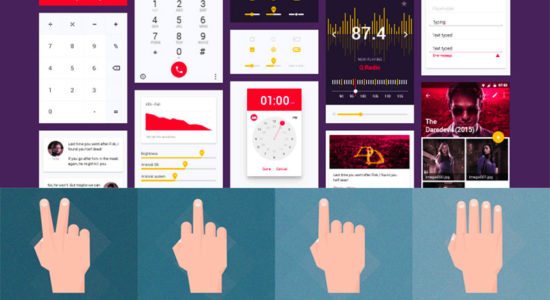

Привет, друзья! Как Вы скорее всего знаете, что совсем недавно вышел IPhone 7 и в связи с эти событием я представляю…
Далее

Привет, дорогой друг! Сегодня выходит очередной пост с лучшими штуками в стиле Материал. Тут ты встретишь крутые и стильные иконки…
Далее